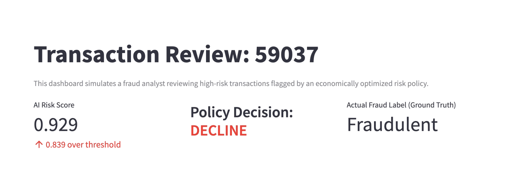
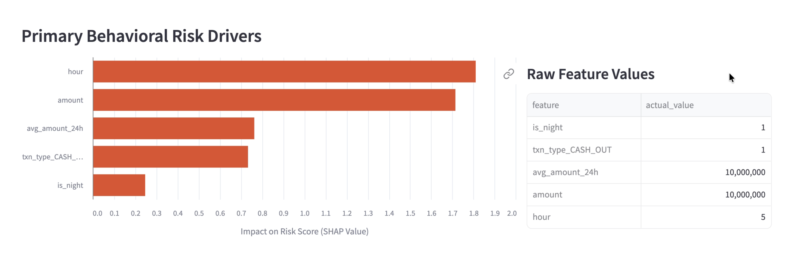
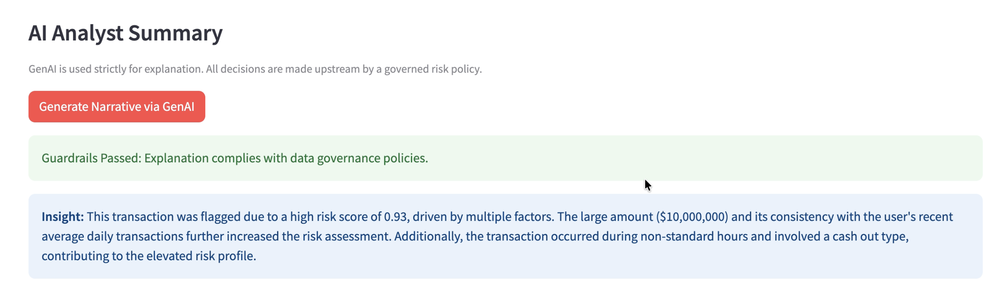

An end-to-end fraud decisioning system built to explore how machine learning, economic optimization, and explainable AI are deployed in real-world payment networks.
I’m really interested in how large-scale payment systems make decisions under uncertainty.
Fraud detection isn’t just about predicting risk—it’s about balancing customer experience,
financial loss, and operational constraints.
This project started as a way for me to learn how real payment networks think about risk,
and it slowly turned into a full decisioning system with explainability and an analyst interface.
What the System Does
Scores transactions using behavioral signals
Selects a decision threshold based on economic tradeoffs
Explains every high-risk decision using SHAP values
Generates analyst-friendly summaries using a governed GenAI layer
Built With
PythonPolars (High-Performance ETL)XGBoostSHAPLlama 3.1 (Local via Ollama)Streamlit
Key Results
~90kTransactions Evaluated
81%Fraud Caught
~90%Approval Rate
0.09Optimal Threshold
All economic values are computed in local currency units provided by the dataset.
The goal is to compare decisions consistently, not estimate real-world profit.
How Decisions Are Made
Instead of using a fixed probability cutoff, I sweep thresholds and choose the one
that maximizes net value. This means explicitly modeling:
Fraud losses from missed fraud
Customer friction from false declines
Revenue preserved from approved transactions
This helped me understand how risk teams think beyond accuracy metrics.
Project Scope
This project is a simulation of a production‑style payment risk system.
It’s designed to explore architecture, decisioning, and explainability —
not to serve as a live or deployed product.
All monetary values are expressed in local currency units provided by the dataset,
and no geographic or exchange‑rate assumptions are made.
Explainability & GenAI (Privacy-First)
In the payments industry, customer data cannot simply be sent to public AI APIs.
To solve this, I integrated a local, air-gapped LLM (Llama 3.1) via Ollama.
The AI never makes decisions—it only translates the mathematical SHAP drivers into
human-readable analyst summaries. Strict guardrails ensure the model never hallucinates
unverified data, and every generation logs its latency and compliance status for full auditability.
Dashboard Walkthrough
A look at the analyst-facing Streamlit interface, moving from alert queue triage
to mathematical explainability, and finally to GenAI narrative generation.

Top section: Risk Score vs. Threshold and final Policy Decision.

Middle section: Behavioral drivers explained via SHAP chart and raw values.

Bottom section: Local GenAI narrative generation insights.Bottom section: GenAI latency telemetry and analyst decision window.
Demo
Below is a short demo showing how an analyst would review a high-risk transaction,
inspect explainability, and generate an AI-assisted summary.
About Me
I’m a data science student who’s especially interested in payments, risk systems,
and how machine learning is used in real operational settings.
I enjoy working on projects that sit between modeling and product — where technical
decisions have real tradeoffs and constraints. This project reflects how I like to learn:
by building systems end‑to‑end and thinking about how they would actually be used.